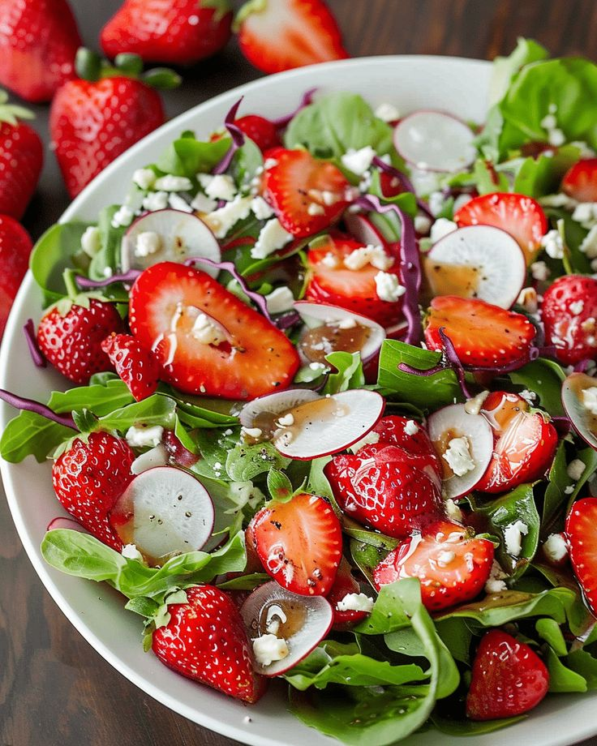

Summer Salad
Ingredients
- 4 cups mixed greens
- 1 cup cherry tomatoes, halved
- 1 cucumber, sliced
- 1/2 red onion, thinly sliced
- 1/2 cup strawberries, sliced
- 1/4 cup feta cheese, crumbled
- 1/4 cup balsamic vinaigrette
Instructions
- In a large bowl, combine greens, tomatoes, cucumber, red onion, and strawberries.
- Toss with feta cheese.
- Drizzle with balsamic vinaigrette and serve immediately.
Back to Cookbook